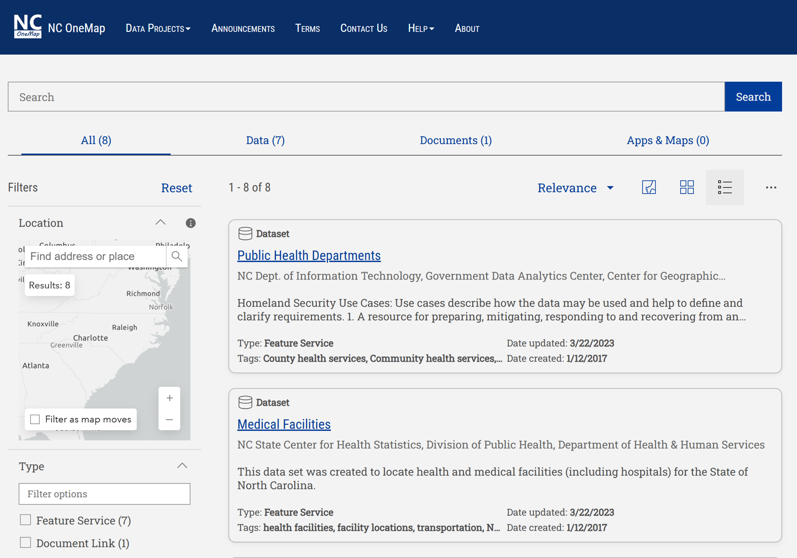
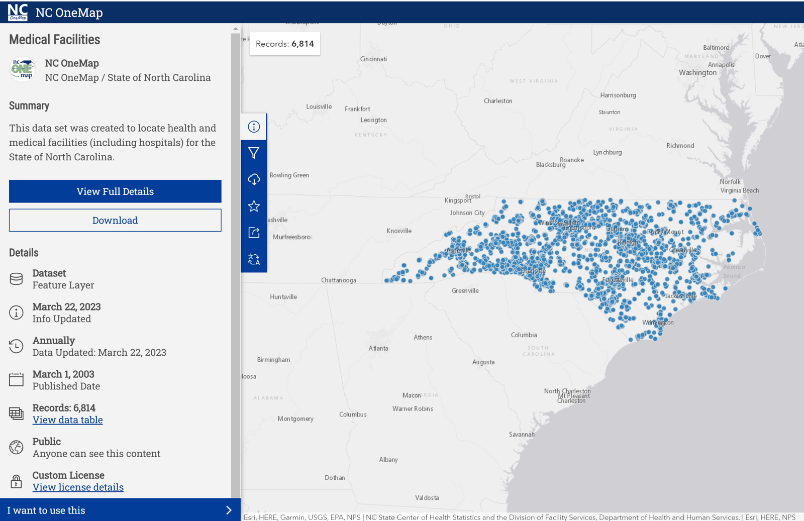
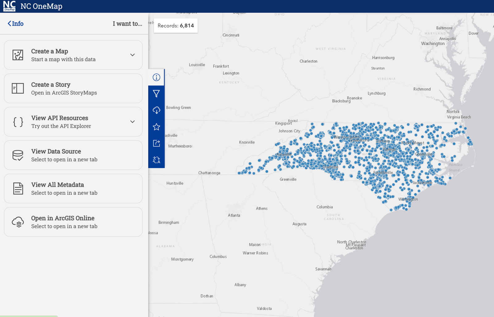
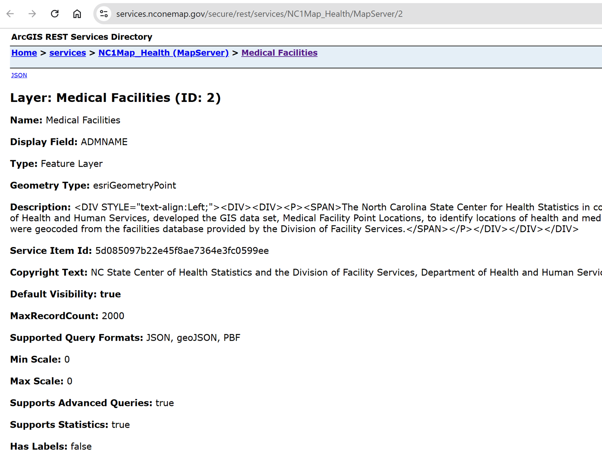
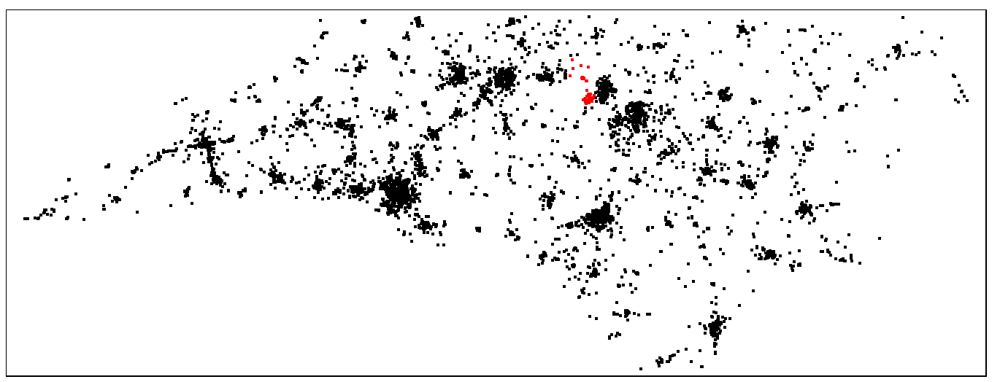

14 ArcGIS Data with arcpullr
By the end of this chapter you should be able to:
- Explain how agencies publish GIS layers on ArcGIS portals such as NC OneMap.
- Tell a feature service from other kinds of items, and find a layer’s REST endpoint URL.
- Read the useful details on a layer’s REST Services Directory page.
- Download a layer into R as an sf object with
get_spatial_layer()from the arcpullr package. - Filter a layer on the server with a
whereclause, and explain why that is better than filtering after you download.
Chapter 13 showed how an API lets your code ask another program’s server for data, using the Census Bureau’s API and the tidycensus package. This chapter uses the same idea for a different, and very common, source of GIS data: layers published with Esri’s ArcGIS software. By the end of it you’ll load a layer from North Carolina’s statewide GIS portal, NC OneMap, straight into R and map it.
14.1 Recap: APIs
An API is a set of rules that lets your code request data from another program’s server. The pattern is always the same: request, then response. Your code sends an endpoint URL, often with parameters that say what you want, and the server sends data back, usually as JSON.
Why bother, when you could click a Download button? Two reasons from Chapter 13 still apply:
- Reproducibility. Your script is the record of exactly where the data came from and how you got them. Anyone can rerun it.
- Efficiency. You download only the data you need, not a whole statewide file.
tidycensus is a wrapper package for the Census API. Today’s wrapper package is arcpullr, for ArcGIS servers.
14.2 ArcGIS portals and feature services
Thousands of government agencies, universities, and companies publish their GIS data online through ArcGIS Online or ArcGIS Enterprise, Esri’s systems for sharing maps and data on the web. Many run a public portal: a website where you can search, preview, and download their layers. North Carolina’s is NC OneMap, https://www.nconemap.gov/, which gathers layers from state agencies, counties, and cities: roads, parcels, schools, hospitals, flood zones, and much more.
Behind the website, each published layer lives on an ArcGIS server. A layer published as a feature service (or as one layer of a map service) has its own REST endpoint: a URL that returns the layer’s features and attributes when your code asks for them. arcpullr is an R package that sends a request to that endpoint and returns the layer as an sf object, ready for the dplyr, sf, and tmap tools you already know.
When you search a portal, look at the type of each result. “Feature Service” or “Feature Layer” marks a layer arcpullr can read (Figure 14.1). Other items, such as documents, web maps, and apps, are not.

14.3 Finding a layer’s REST URL
arcpullr needs one thing from you: the layer’s REST URL. Here is how to find it on NC OneMap, using the Medical Facilities layer. The same steps work on most ArcGIS Online and ArcGIS Enterprise portals.
- Search NC OneMap for a dataset, such as “medical facilities”.
- Open its item page. Check that the details panel on the left says it is a feature layer.
- Click “I want to use this” at the bottom of the details panel (Figure 14.2).
- Choose “View Data Source” from the list that opens (Figure 14.3). It opens the layer’s REST service page in a new tab.
- Copy that page’s URL from the address bar. That URL is what arcpullr needs.


14.3.1 Reading the REST Services Directory page
The page that opens is the layer’s page in the ArcGIS REST Services Directory (Figure 14.4). It is plain, but it holds everything you need to know before you write any code:

- The URL.
https://services.nconemap.gov/secure/rest/services/NC1Map_Health/MapServer/2. The number at the end,2, is the layer ID: this service holds several layers, and Medical Facilities is number 2. If you copy a URL without the number, you have the whole service, not one layer. - Geometry Type.
esriGeometryPoint, so each feature is a point. Others are polylines and polygons. - MaxRecordCount. 2,000: the most features the server returns for one request.
- Fields. Further down the page, a list of the attribute columns and their types. You need these names to filter the layer.
The item page reports 6,814 records, more than the 2,000 the server returns at once. You don’t need to worry about that: arcpullr asks for the features in batches and puts them back together. Still, check that the number of rows you get matches what the portal reports.
14.4 Anatomy of an arcpullr request
Install arcpullr once, in the Console, with install.packages("arcpullr"). Then:
library(arcpullr)
library(sf)
library(tmap)
url <- "https://services.nconemap.gov/secure/rest/services/NC1Map_Health/MapServer/2"
medical.centers <- get_spatial_layer(url, where = "fcounty = 'Orange'")Line by line:
urlstores the REST endpoint you copied from the service page.get_spatial_layer()sends the request and returns the layer as an sf object.where =is a filter, written in SQL, that runs on the server. Herefcounty = 'Orange'returns only the facilities in Orange County. Without awhereargument, you get every feature in the layer.
14.4.1 Writing a where clause
The where argument is a small piece of SQL, the language of databases, that the server applies before it sends anything back. It uses the field names from the REST page, not the ones you might rename later in R. A few rules cover most needs:
where clauses. The field names are examples; use the fields listed on your layer’s REST page.
| You want | where = |
|---|---|
| Text equal to a value | "fcounty = 'Orange'" |
| One of several values | "fcounty IN ('Orange', 'Durham', 'Wake')" |
| A number above a value | "beds > 100" |
| Two conditions | "fcounty = 'Orange' AND beds > 100" |
| Text that starts with something | "fcounty LIKE 'Ch%'" |
Note the quotes: the whole clause is an R string in double quotes, and text values inside it go in single quotes. SQL uses =, not ==, and AND and OR, not & and |.
Why filter on the server instead of downloading everything and using filter() in R? For a statewide layer of a few thousand points, either works. But many layers are far bigger: every parcel or building in the state. Filtering on the server means less data crosses the internet, the request is faster, and you never hit the server’s limits. It also makes your script say exactly which part of the data you used.
The REST page says the Medical Facilities layer was “geocoded from the facilities database”. What could go wrong with locations made that way (Chapter 13)? How might you check a few of them?
14.5 Two requests, one map
Here are two requests to the same layer: one for every medical facility, and one for Orange County only. tmap draws all of them in black, then the Orange County facilities in red on top (Figure 14.5):
url <- "https://services.nconemap.gov/secure/rest/services/NC1Map_Health/MapServer/2"
all.medical.centers <- get_spatial_layer(url)
orange.medical.centers <- get_spatial_layer(url, where = "fcounty = 'Orange'")
tm_shape(all.medical.centers) +
tm_dots() +
tm_shape(orange.medical.centers) +
tm_dots(fill = "red")
The dots alone trace the shape of the state, with dense clusters around Charlotte, the Triad (Greensboro, Winston-Salem, and High Point), and the Triangle (Raleigh, Durham, and Chapel Hill), where most people live.
14.5.1 Before you analyze
The result is an ordinary sf object, so everything from earlier chapters applies:
- Check it.
nrow(),names(), andglimpse()show how many features came back and what the columns are called. - Check the coordinate system. Run
st_crs()on the result. Before measuring distances or areas, project it to North Carolina State Plane withst_transform(32119)(Chapter 12). - Note the date. Portal layers are dynamic: agencies update them, sometimes daily. Rerunning your script next month may give different data. Record the date you downloaded it, and save a copy with
st_write()if your results must be exactly reproducible.
14.5.2 More arcpullr functions
get_spatial_layer() is the one you’ll use most. arcpullr has others for other jobs:
get_table_layer()downloads a table that has no geometry.get_layer_by_poly()downloads only the features that fall inside a polygon you give it, such as one county’s boundary. Likewhere, it filters on the server, but by location instead of by attribute.get_image_layer()andget_map_layer()download raster images and map services.
14.6 Try it
- Go to https://www.nconemap.gov/ and browse the data by theme, or search for a topic you care about.
- Find a dataset that is a feature service.
- Track down its REST URL: “I want to use this”, then “View Data Source”.
- Paste the URL into
get_spatial_layer()and map the result with tmap. - Bonus: add a
wherefilter for your own county. Which field holds the county name in your layer?
14.7 Check your understanding
arcpullr returns a layer as:
On NC OneMap, which menu item opens a layer’s REST service page?
In
.../NC1Map_Health/MapServer/2, what is the2?What is the name of the arcpullr function that downloads a feature layer?
A
whereclause is applied by the server, before any data are sent to R.Which
whereclause returns only facilities in Durham County?MaxRecordCount tells you:
Data downloaded from a portal today will always be identical to data downloaded next year.
14.8 Summary
- Agencies publish GIS layers on ArcGIS Online and ArcGIS Enterprise portals. NC OneMap is North Carolina’s.
- Each published layer has a REST endpoint URL. On NC OneMap, find it with “I want to use this” and then “View Data Source”.
- The REST Services Directory page shows the layer ID (the number at the end of the URL), the geometry type, the MaxRecordCount, and the field names.
- arcpullr’s
get_spatial_layer(url)downloads a layer as an sf object. - A
whereclause, written in SQL, filters the layer on the server:where = "fcounty = 'Orange'". Filtering on the server is faster and sends less data. - Portal layers change over time. Check what you got, project it before measuring, and record the download date.
14.9 Exercises
- Your county. Download the NC OneMap Medical Facilities layer for your home county (or Orange County) with a
whereclause. How many facilities are there? Compare your count with the full layer filtered in R withfilter(). - Two counties. Use
INto download the facilities for Orange and Durham counties in one request. Map them, colored by county. - A new layer. Find a different feature service on NC OneMap, such as schools, parks, or fire stations. Record its REST URL, geometry type, MaxRecordCount, and three of its field names, then download and map it.
- Polygons. Find a polygon layer on NC OneMap. Download it, project it with
st_transform(32119), and calculate the area of each feature withst_area(). - Join it up. Count the medical facilities in each county, then join the counts to a county boundary layer (Chapter 15) and make a choropleth map of facilities per 10,000 people, using county populations from tidycensus (Chapter 13).
14.10 Further reading
- The arcpullr page on CRAN, https://cran.r-project.org/package=arcpullr, links to the package manual and vignettes, which list every function with examples.
- NC OneMap, https://www.nconemap.gov/, North Carolina’s portal for state and local GIS data.
- Esri’s ArcGIS REST APIs documentation, https://developers.arcgis.com/rest/, explains what a feature service is and every parameter a query can use, including
where.
+ and drawn on top
of the layers before it. In GIS, a layer holds one theme of features,
such as roads or soils.
A website where an organization publishes GIS data for people to search,
preview, and download, such as NC OneMap.
North Carolina’s statewide GIS data portal, https://www.nconemap.gov/, with layers from state and
local agencies.
A layer published on an ArcGIS server whose features and attributes can
be requested through its REST endpoint.
The most common style of web API: each dataset has its own URL, you ask
for data with ordinary web requests, and the answer usually comes back
as JSON.
The web address of one dataset or service in an API, such as
https://api.census.gov/data/2022/acs/acs5.
The plain web page an ArcGIS server shows for each service and layer,
listing its layer ID, geometry type, MaxRecordCount, and fields.
“Simple features”: the R package for spatial vector data. An sf object
is a data frame with a geometry column holding each row’s point, line,
or polygon.
An R package that downloads layers from ArcGIS REST services as sf
objects, with get_spatial_layer().
A bundle of code, written by other users, that adds new functions to R.
Install it once with install.packages(), then load it in
each session with library().
Application Programming Interface: a set of rules for how one program
asks another for data or services, such as your R script asking the
Census Bureau’s server for a table.
A set of lines and blocks of code that work together to do a whole job.
R runs a program from top to bottom, so order matters.
An R package that downloads US Census data through the Census API and
returns it as a tidy data frame, with boundaries attached if you ask.
JavaScript Object Notation: structured text that most web APIs send
back, which R can turn into lists or data frames.
The ability for anyone to rerun an analysis from its code and data and
get the same result.
A plain file of R code, ending in .R. Anything that isn’t
code must be written as a comment.
An R package that hides the details of calling an API behind simple
functions, such as tidycensus for the Census API.
Esri’s systems for publishing and sharing maps and GIS layers on the
web. Many agencies’ data portals run on them.
One spatial object in a layer of data, such as one tree, one sidewalk
segment, or one building. In an sf object, each row is a feature.
The tidyverse package for transforming data frames: filtering rows,
choosing columns, adding new columns, joining tables, and summarizing.
An R package for making thematic maps quickly, with sensible defaults.
The number at the end of an ArcGIS layer’s URL, such as the
2 in .../MapServer/2, that picks one layer out
of a service.
A closed shape that represents an area, such as a county, a lake, or a
census tract.
The most features an ArcGIS server returns for one request. arcpullr
asks for larger layers in batches.
The RStudio pane (bottom left) where R runs commands and prints results,
warnings, and errors. Nothing typed here is saved.
Structured Query Language, the language of databases. ArcGIS
where clauses use it: fcounty = 'Orange'.
An input to a function, written inside its parentheses.
The rules that tie coordinates to places on the Earth, including how the
round Earth is flattened onto a map (the projection). Layers must share
a coordinate system before you can combine them.
A set of local projections for the US, with one or more zones per state,
in feet or meters. North Carolina’s zone is EPSG:32119.
Data that are continually updated, so the same request may return
different data later. Static data are a fixed snapshot.
Spatial data stored as a grid of cells (pixels), each holding a value,
such as a satellite image or an elevation model. In R, the
terra package handles rasters.
Combining two tables by matching rows on a shared key column, such as
attaching Census data to boundaries by GEOID with
left_join().
The Comprehensive R Archive Network: the official website for
downloading R and most R packages.
Code that takes inputs (arguments), does a job, and returns an output,
such as mean(temps).